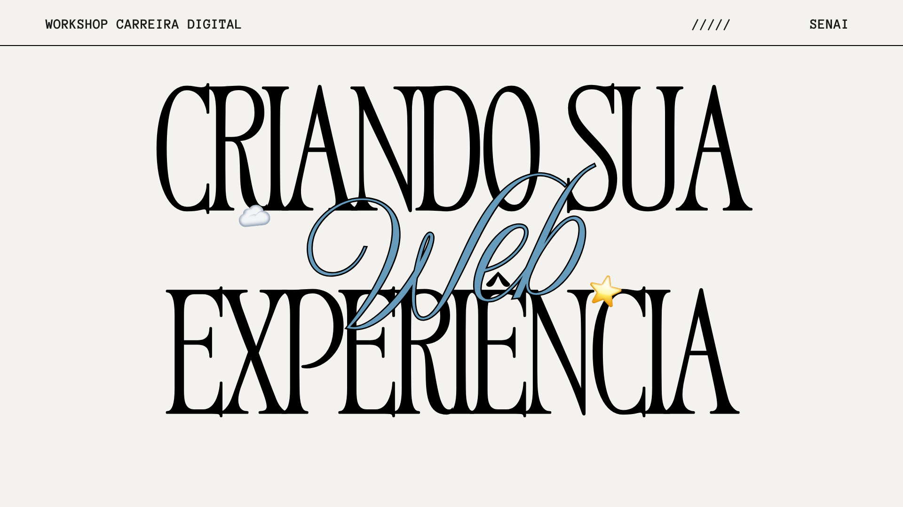
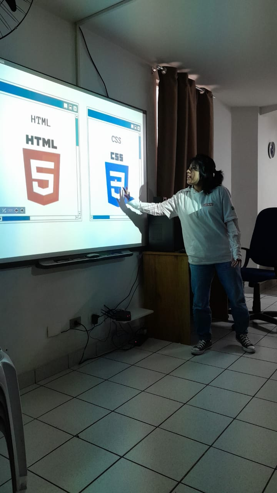

Uma iniciativa com os alunos do terceiro médio
O Workshop Carreira Digital é uma iniciativa de extensão universitária criada para aproximar estudantes do Ensino Médio do universo da tecnologia. Nosso objetivo é desmistificar o desenvolvimento web e abrir horizontes profissionais na área de TI, mostrando de forma prática que qualquer pessoa pode começar a criar seus próprios projetos digitais.

Diante da falta de um laboratório de informática tradicional no Externato José Bonifácio, nossa jornada transformou um desafio em solução: adaptamos a oficina para os tablets da própria escola e celulares dos alunos. Através da plataforma em nuvem CodePen, os alunos colocaram a mão na massa com HTML5 e CSS3, criando suas primeiras páginas autorais. Este portfólio centraliza o resultado de todo esse esforço e talento!